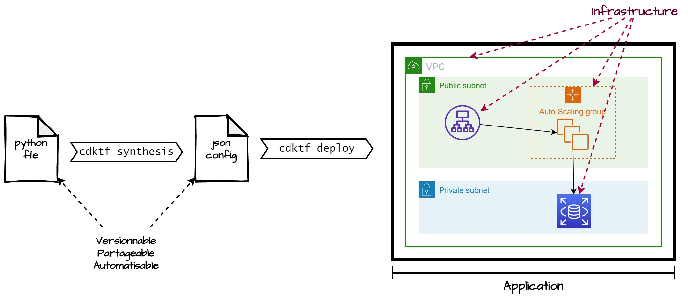

Cloud Computing, CM2
Infrastructure as Code
Pépin Rémi, Ensai, 2025
remi.pepin@insee.fr
Haute disponibilité
Infrastructure du Cloud
- Régions : emplacement "physique" dans le monde qui regroupe des zones de disponibilité (Availability Zone, AZ)
- Zones de disponibilité : data centers logiques, les ressources de différentes AZ sont isolées les unes des autres
- Zones locales : data centers spécifiques pour rapprocher le calcul du client
- Emplacements périphériques : points de présence pour services spécifiques (cache)
Infrastructure du Cloud
- Si une région tombe cela n'impacte pas les autres
- Si une AZ tombe, cela n'impacte pas les autres AZ
- Les régions sont indépendantes : pas les mêmes services, peu de services permettent le cross region.
- Tous les AZ d'une même région ont les mêmes services
Déployer une application sur plusieurs AZs/régions permet de limiter les indisponibilités dues au Cloud Provider
Utilisation d'un service au cours du temps

Déploiement sur une seule machine

Déploiement sur une flotte élastique de machine

Modèle de déploiement
Machine unique
- ❌ Désavantages
- Facturation élevée
- Reprise sur erreur lente
- ✅ Avantages
- Simple à mettre en place
- Application stateful
Flotte de machines
- ❌ Désavantages
- Ajoute de la complexité
- Surveiller une flotte de machine
- Application stateless
- ✅ Avantages
- Permet de faire des économies
- Permet d'assurer haute disponibilité
Auto-Scaling Group + Load Balancer

Auto-Scaling Group + Load Balancer
- Auto-Scaling Group : gère une flotte d'EC2. Peut en lancer/éteindre en fonction de conditions (heures, utilisation CPU, RAM), ou si une machine est considérée hors service
- Load Balancer : composant qui répartit le trafic entre plusieurs machines. Permet un point d'entrée unique pour accéder à une flotte. Équilibre le trafic, et peut renvoyer un utilisateur vers la même machine (sticky session)
Auto-Scaling Group + Load Balancer
- Haute disponibilité
- Élasticité horizontale
- Application sur plusieurs AZs
- Permet de faire des économies
- Nécessite d'être pris en compte dans le code
- Pour la partie traitement, pas stockage
Pattern courant pour assurer
haute disponibilité
Infrastructure as Code (IaC)
Un constat
- ⏳ Fastidieux
- 🐇 Réplication ?
- 📚 Versionnable ?
- 🎼 Orchestration ?
- 🤔 Ai-je bien tout éteint ?
Infrastructure as Code
L'Infrastructure as Code (IaC) consiste à
définir son architecture informatique comme du code. Au lieu de
naviguer sur une interface, les services à déployer seront définis
dans des fichiers via un langage spécifique. Ce code pourra ainsi
être versionné et redéployé à l'infini.
- Terraform/Open Tofu (cross plateforme)
- Amazon Cloud Formation, Amazon Serverless Application Manager
- Azure Resource Manager
- Google Cloud Deployment Manager
Terraform
- Projet propriétaire crée par HashiCorp (acheté par IBM en 2025), Open Tofu fork open source
- Langage de configuration (HCL)/CDK pour code
- Terraform provider pour traduction
- Utilise les API des différents systèmes

Configuration language vs CDKTF
- HashiCorp Configuration Language (HCL) : pas JSON ni YAML (existe une version json)
- CDKTF : bibliothèques pour coder son architecture dans son langage de prédilection
Pour ne pas apprendre un nouveau
langage, nous allons utiliser le CDKTF

CDKTF
Exemple
from constructs import Construct
from cdktf import App, NamedRemoteWorkspace, TerraformStack, TerraformOutput, RemoteBackend
from cdktf_cdktf_provider_aws.provider import AwsProvider
from cdktf_cdktf_provider_aws.instance import Instance, InstanceEbsBlockDevice
class MyStack(TerraformStack):
def __init__(self, scope: Construct, ns: str):
super().__init__(scope, ns)
AwsProvider(self, "AWS", region="us-west-1")
instance = Instance(self, "compute",
ami="ami-01456a894f71116f2", # l'id de l'os. Pas possible de juste mettre ubuntu
instance_type="t2.micro", # le type de l'instance
ebs_block_device= [InstanceEbsBlockDevice(
device_name="/dev/sda1",
delete_on_termination=True,
encrypted=False,
volume_size=20,
volume_type="gp2"
))
TerraformOutput(self, "public_ip",
value=instance.public_ip,
)
app = App()
stack = MyStack(app, "aws_instance")
app.synth()
Exemple
class MyStack(TerraformStack):
def __init__(self, scope: Construct, id: str):
super().__init__(scope, id)
AwsProvider(self, "AWS", region="us-east-1")
security_group = SecurityGroup(self, "sg-tp",...)
launch_template = LaunchTemplate(self, "compute",...)
target_group = LbTargetGroup(self, "target_group",...)
elb = Lb(self, "ELB",...)
lb_listener = LbListener(self, "lb_listener",...)
asg = AutoscalingGroup(self,"asg",...)
app = App()
MyStack(app, "cloud_commputing")
app.synth()
In a nutshell 🥜
- Une classe qui hérite de TerraformStack
- Toute l'infra dans le init (ou du moins accessible depuis le init)
- Objets qui représentent les services, premier param self, second un nom métier
- Les autres attributs sont les configs à remplir sur la console
Allez voir la doc des classes
avec un Ctrl+clic
Exemple
class HighAvailabilityStack(TerraformStack):
def __init__(self, scope: Construct, id: str):
super().__init__(scope, id)
AwsProvider(self, "AWS", region="us-east-1")
security_group = SecurityGroup(self, "sg-tp")
launch_template = LaunchTemplate(self, "compute",...)
target_group = LbTargetGroup(self, "target_group",...)
elb = Lb(self, "ELB",...)
lb_listener = LbListener(self, "lb_listener", ...)
asg = AutoscalingGroup(self,"asg", ...)
app = App()
MyStack(app, "HighAvailabilityApp")
app.synth()
CDKTF : TP 2 - Prise en main
Ce que vous allez faire
- Terminer le TP 1 si ce n'est pas fait
- Refaire le TP 1 en utilisant le CDK Terraform